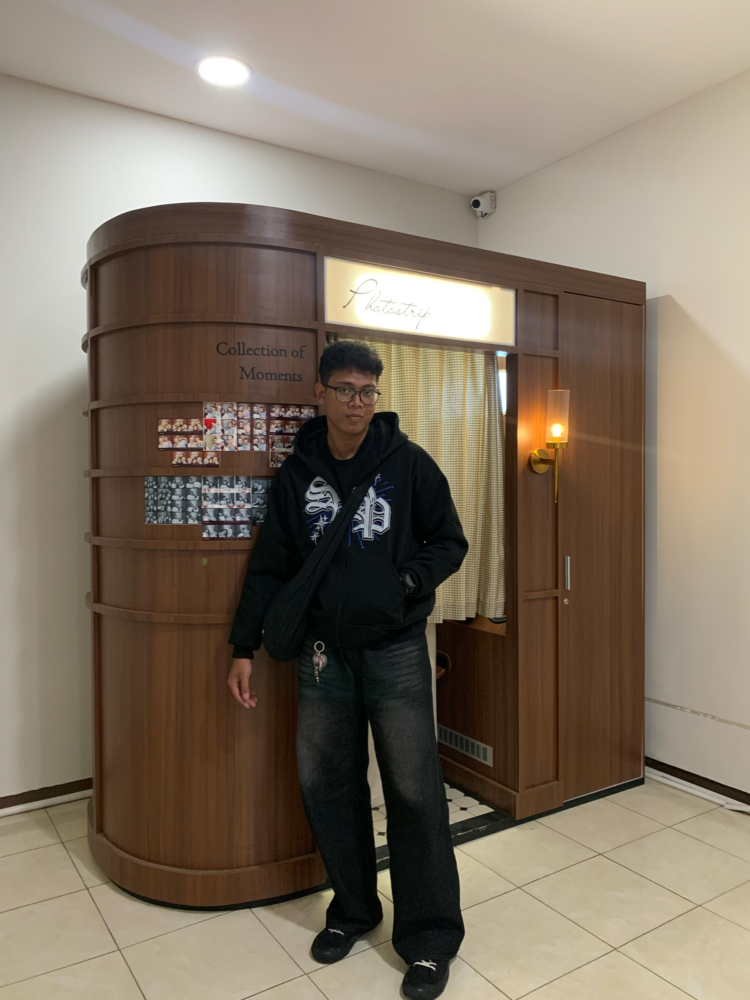
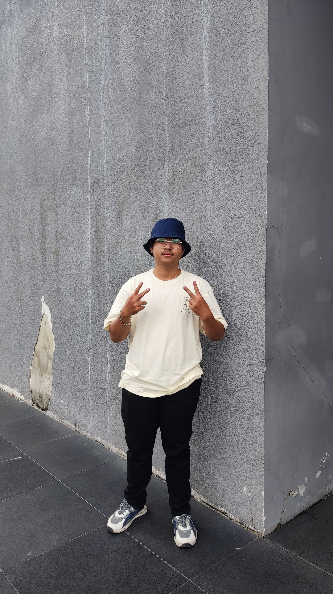
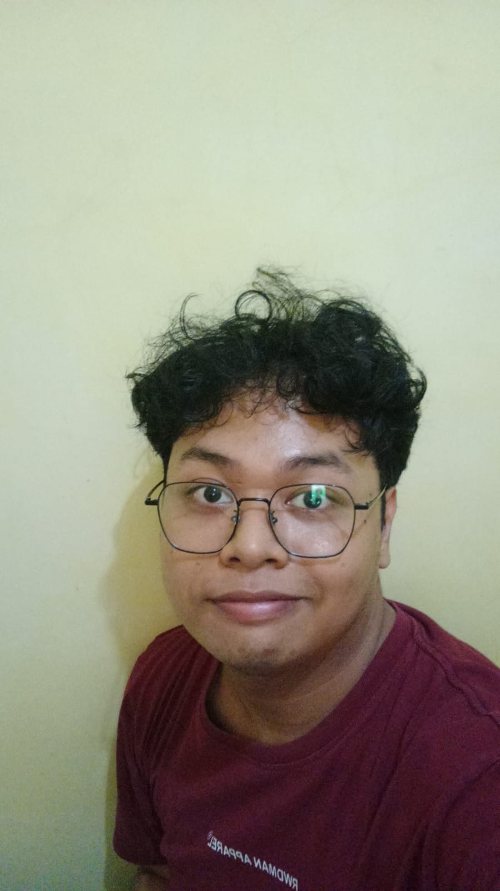

Arahkan kamera ke kode QR dengan jelas dan tunggu beberapa saat hingga hasil terdeteksi, disarankan untuk saat scan secara landscape (posisi horizontal) untuk hasil yang lebih baik.

Teknik Informatika
Fakultas Teknologi & Desain

Teknik Informatika
Fakultas Teknologi & Desain

Teknik Informatika
Fakultas Teknologi & Desain
NIM:
Studi:
Fakultas: